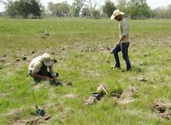

Plantio de Árvores Nativas
Promovemos o reflorestamento de áreas afetadas por queimadas, plantando espécies nativas que ajudam a recuperar o equilíbrio ecológico e oferecer abrigo à vida selvagem.
Saiba mais

O Pantanal está enfrentando uma situação alarmante em 2024 devido a um aumento significativo de queimadas, que já superam os níveis do ano recorde de 2020. Nos primeiros meses de 2024, mais de 372 mil hectares foram destruídos pelo fogo, 54% a mais do que no mesmo período de 2020.
Ajude agoraA Guardiões do Pantanal nasceu para proteger um dos biomas mais ricos e ameaçados do mundo. Lutamos pela preservação da biodiversidade e pelo bem-estar das comunidades locais, combatendo ameaças como queimadas e desmatamento. Juntos, podemos salvar o Pantanal para as futuras gerações.
Promovemos o reflorestamento de áreas afetadas por queimadas, plantando espécies nativas que ajudam a recuperar o equilíbrio ecológico e oferecer abrigo à vida selvagem.
Saiba maisDesenvolvemos programas para resgatar, tratar e reintegrar animais silvestres afetados por queimadas, além de monitorar espécies em risco de extinção no Pantanal.
Saiba maisUsamos drones e imagens de satélite para mapear focos de incêndios no Pantanal, auxiliando as autoridades na prevenção rápida de danos à fauna e flora.
Saiba mais


Rua JavaScript n°124, Vila HTML - São Paulo - SP